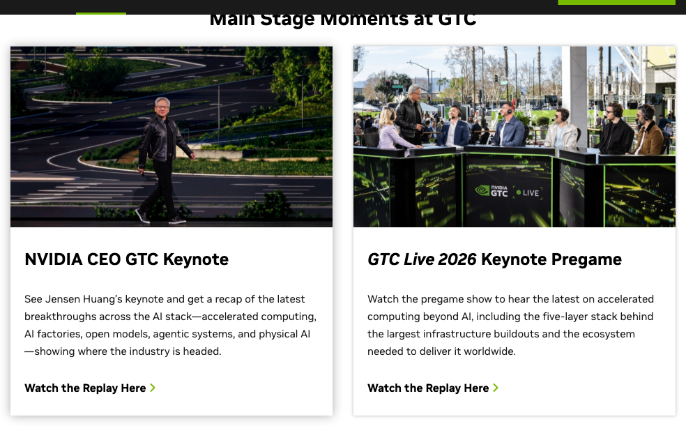
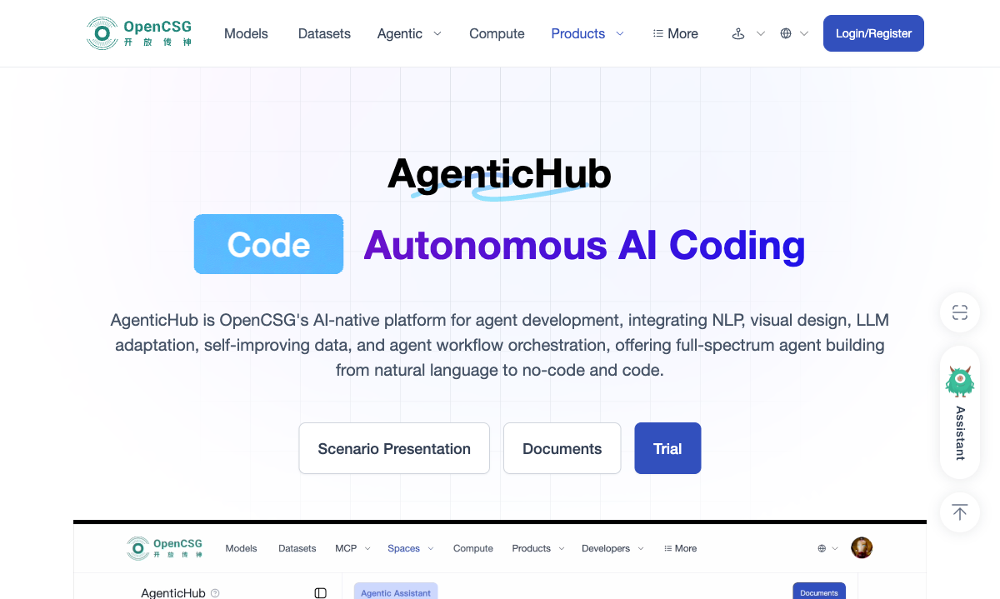

从 GTC 2026 看 AI 落地最后一公里
讲师 陈放
— Jensen Huang, NVIDIA CEO · GTC 2026 Keynote

San Jose · March 16, 2026
GTC 2026 Keynote - Jensen Huang on Stage (nvidia.com/gtc)
Huang 宣布未来 NVIDIA 7.5万员工将协同750万个 AI Agent 工作 — 100:1 的人机比
AI 第一个十年是训练，下一个十年是推理。Vera Rubin 平台推理成本降低 10 倍
OpenClaw 60天斩获 250K+ GitHub Stars，超越 React 成为史上增长最快的开源项目
让 AI 真正"操作"工具，并把能力接到真实业务里
OpenClaw 是开源 AI Agent 运行框架，把复杂系统拆成 AI 可调用的能力模块。
负责连接 API、数据库、文件等实际能力
负责任务规划、分发和多步执行
负责接入微信、钉钉、飞书等真实入口
GitHub Stars
达成时间
内置技能
接入渠道
框架有了，模型有了，可从"能用"到"好用"还有一道鸿沟
从OpenCSG的产品架构说起：每个人都需要一个opc的基座，但是他不应该仅仅是openclaw。
解决“选哪个模型”
解决“装什么能力”
解决“怎么接到真实业务”
先定模型
再装方案
最后接入口
在 CSGHub 选模型，在 AgenticHub 装客服方案，用 OpenClaw 接到微信或网站。

先把一个场景跑通，比连续讲五页功能点更重要。
技术闭环跑通后，人的角色会从“执行者”变成“指挥者”
你定方向、做判断、分配任务
Agent 自动处理客服、生成报告、分析数据
检查输出、优化Prompt、归档成果
招5人客服 + 3人内容 + 2人数据分析 管理成本高
1个客服Agent + 1个内容Agent + 1个数据Agent 你只负责决策
任务：写出你最想先落地的 1 个 Agent 场景
先说清楚它处理的到底是哪件事。
模型、能力、入口分别是什么？
用一个最小指标验证它到底有没有价值。
课后答疑
老师无法24h回复
模型 + 知识库 + 微信答疑入口
7x24 即时答疑，老师重复回复减少一半
Course 1 完成！
你已掌握 AI 落地的完整认知框架
工具已经就位，接下来是你的主场。